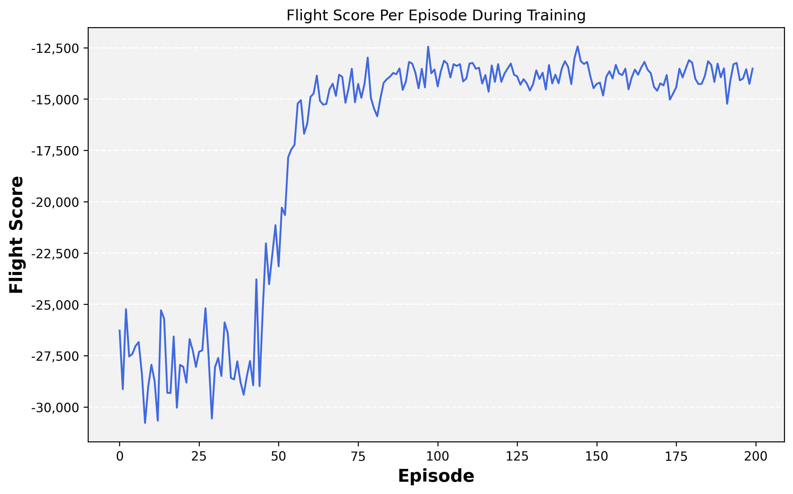
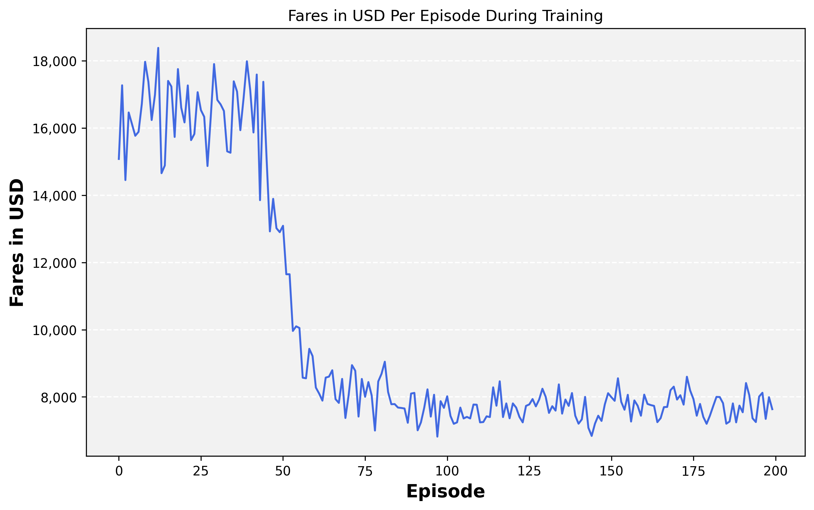
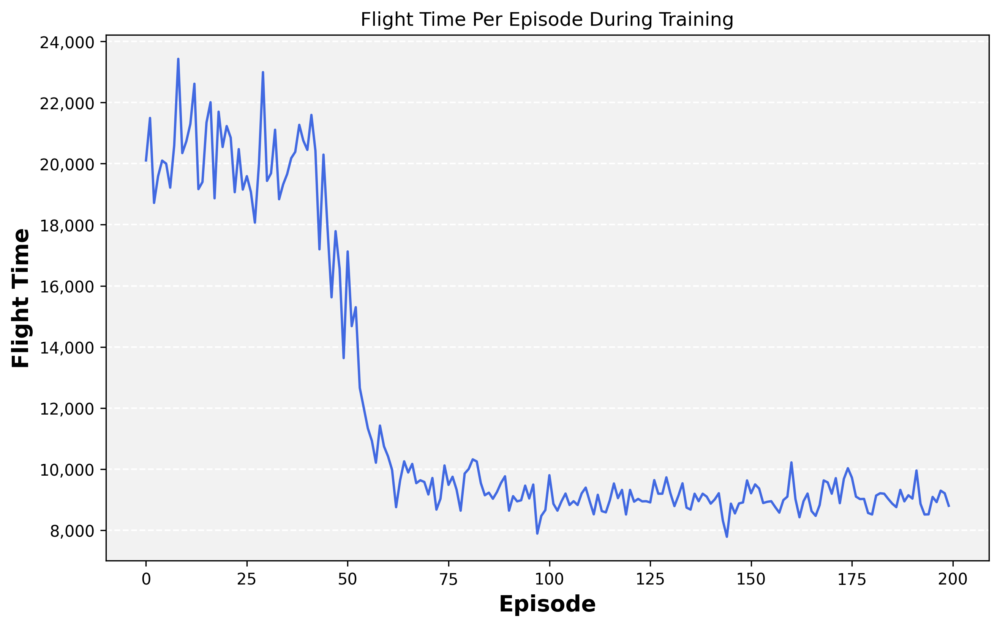

Abstract
The Traveling Salesman Problem (TSP) is a well-studied optimization problem with a wide variety of applications and approaches to solving it. The methods and tools of Reinforcement Learning (RL) offer a distinctive strategy for approaching the TSP due to the ease with which its reward structure can be modified. Using data obtained from Skyscanner, this study examines how Q-learning, an RL technique, can optimize a travel route through 42 Asian cities. We first provide a theoretical background into the tools discussed, followed by an exposition of the methodology and experiments. The study’s results show that Q-learning is a very effective method for solving the TSP. We also discuss the model’s limitations and how it can be extended in future work.

1 Introduction
Anyone who has planned a trip that involves visiting several countries will have undoubtedly found themselves wondering what is the best way to visit each location while minimizing the cost of the trip. Each location has several considerations, such as distance, cost, and the importance of visiting specific places. The question can become overwhelming with the realization that we would have to consider each country as both a potential starting point and a potential next stop from any other country. We can analyze such a scenario through the framework of the Traveling Salesman Problem (TSP). Karl Menger, one of the first to study the problem mathematically, defines the TSP as “the task to find, for finitely many points whose pairwise distances are known, the shortest route connecting the points” [2]. In other words, the goal of the TSP is to find the shortest possible route that visits every point once and then returns to the origin. The TSP is an NP-hard combinatorial optimization problem. It is simple to solve by brute force for five stops by trying all combinations (5! problem) but already impossible for 50 (50! problem).
The TSP is a well-known and widely studied problem in mathematics and computer science. Beyond travel, the TSP has applications in many fields, including manufacturing, transportation, and engineering. For example, some applications that successfully employ the TSP include overhauling gas turbine engines [3], X-Ray crystallography [4], and computer wiring [5]. Although researchers have studied the TSB extensively and developed several discrete optimization techniques to solve it, Reinforcement Learning (RL) offers many advantages compared to classical optimization methods. Most importantly, RL offers a framework in which it is relatively simple to change the reward structure to adjust the optimization problem under changing circumstances.
In this paper, we approach the TSP from an RL perspective and utilize Q-Learning to optimize a 42-country travel route using real prices obtained from SkyScanner. First, we discuss the theoretical background that motivates the experiment. Then, we explore the methodology and data on which we built the analysis. Next, we review the results, which show that Q-learning is a very effective method for solving the TSP. Lastly, we offer a discussion on the model’s limitations and the ways to extend the model in future research.
3 Methodology
3.1 Problem Formulation
In this paper, we employ the asymmetric case of the TSP since the costs associated with traveling from airport A to airport B are not the same as the costs of traveling from B to A, given differing fare rates. Furthermore, itineraries might include varying stopovers that lead to travel distances between the points that are not symmetrical in the model. We formulate the TSP as a set of locations \(V=\left\{v_1, \ldots \ldots, v_n\right\}\), a set of edges \(A=\{(r, s): r, s \in V\}\), and a set of costs associated with each edge \(d_{r s}=d_{s r}\), where each cost is associated with an edge \((r, s) \in A\). Since this is the asymmetric case, we allow for \(d_{r s} \neq d_{s r}\) for any edge \((r, s)\)[7].
In the Q-learning framework, we aim to to learn which action to take in each location (the state). To this end, the model learns the value associated with each transition from one location to another (referred to as Q-values) by sampling the environment and repeatedly applying the update rule for the Q-learning algorithm:
\[ \begin{align}\begin{aligned}Q(s, a) = Q(s, a) + \alpha * \\\begin{split} \left( r +\gamma \max_{a'} Q(s', a') - Q(s, a) \right) \end{split}\end{aligned}\end{align} \tag{1}\]
where \(Q(s, a)\) is the current estimate of the value of taking action \(a\) in state \(s\), \(r\) is the reward (cost) from taking an action, \(\alpha\) is a learning rate hyperparameter, and \(\gamma\) is a discount rate hyperparameter. States and actions denoted with the \(\prime\) symbol denote the next state or action. By applying Equation 1, the model can update the existing estimates of \(Q(s, a)\). Then, the agent takes the action with the highest Q-value at every step [14].
3.2 Data
We obtained the initial list of target countries and coordinate data from [15]. North Korea, Yemen, Myanmar, Syria, Afghanistan, and Bhutan were removed from the list due to limited flight availability to their capital cities, resulting in 42 countries for the study. Figure 2 shows the airport locations in each country.
We collected these countries’ flight prices, duration, and stopover data using the SkyScanner API [18]. We made several simplifying assumptions in the data collection. We only obtained data for the single, arbitrary date of 22 May 2023. Also, the data does not include the layover time between segments, only the in-flight time1. Lastly, the data collected only corresponds to economy cabin class. Relaxation of these assumptions can be explored in future work.
Given the 42 airports, we completed three transition matrices with 1,722 non-zero entries, each matrix corresponding to either flight price, duration, or stopover information. The entries correspond to each of the \(42 \times 42\) transitions minus the diagonal, which would correspond to traveling from an airport to itself (\(42 * 42 - 42 = 1,722\)). The search resulted in 38,236 segments, narrowed to 15,396 itineraries, and narrowed to the 1,722 ‘best’ flights. To choose the ‘best’ flight, we used the heuristic of valuing each flight hour at $20 and every stopover at $50, resulting in \(\rm best \, price = fare + flight \,time * 20 + stops * 50\). Figure 3 shows color-coded prices between airports.
4 Experiments and Results
We implemented the model in Python using custom classes and functions. The model was based on the [19] implementation, particularly on the method for tracking previously visited locations and preventing revisiting them. The model constructed a matrix of Q-values of size \(42 \times 42\) and employed an e-greedy strategy with epsilon decay at a rate of 0.999. Finally, we ran the model through 200 episodes of Q-learning, with results available in Figure 4.




The results obtained had several important improvements from the initial randomness, such as:
- Decreasing overall flight expenditure from around $18,000 to $8000
- Decreasing overall flight expenditure from around 20,000 minutes (333.3 hours or 7.93 average hours per flight) to 9000 (133.3 hours or 3.17 average hours per flight)
- Decreasing overall stopover expenditure from around 100 to 60.
Furthermore, Figure 5 shows the chosen trajectories for the first and last episodes, allowing us to observe the choice changes from the untrained and trained models. t is challenging to discern the disparities between these figures through mere observation, underscoring the model’s proficiency in revealing mathematical advantages that may otherwise be arduous to infer by visual inspection alone.
5 Conclusions
This study began by explaining the TSP and motivated the use of RL as a method for solving it. Then we reviewed the TSP literature and the wide variety of existing solutions, including heuristic, approximate, and RL methods. We then formalized the problem and explained how the Q-learning process works. Next, we covered how the data for the experiment was collected, the assumptions made, and visualized the search space. Lastly, we discussed the results from the experiment showing that Q-learning is a very effective method for solving the TSP, achieving significant gains in cost reduction and time minimization for the desired route through the Asian cities.
Future work may include the relaxation of several assumptions made in this implementation. For example, future implementations may include additional data to capture varying prices across the expected duration of the trip rather than utilizing prices from a single date. Also, more complicated choices of ‘best’ flight may be considered to explore their impact on the model.
References
Footnotes
For clarification, we cannot take the difference between the first segment departure and last segment arrival to calculate the total itinerary time because flight data is provided in local time, which would not account for time zone changes.↩︎